Frames / Bumpers
87 parts
1992 - 1996 Dodge Viper RT/10 Front Fascia Bumper Cover - 04864973
$649.00
1992 - 1996 Dodge Viper RT/10 Rear VIPER Decal in Orange/RED - 0GC43LV5
Part # 0GC43LV5
$99.00
 Out of stock
Out of stock1992 - 1999 Dodge Viper Left Fog Lamp Cover - 04643819
Part # 4643819
$179.99
 Out of stock
Out of stock1992 - 1999 Dodge Viper Right Fog Lamp Cover - 04643818
Part # 4643818
$149.99
1992 - 2002 Dodge Viper "DODGE" Rear Badge in DARK GREEN - 0GC54SGW
$36.00
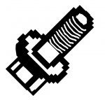
1992 - 2002 Dodge Viper Bolt - 06025335
$12.25

1992 - 2002 Dodge Viper Front LEFT Front Fascia Protective Film - 04848829
Part # 4848829
$69.00
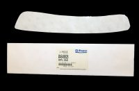
1992 - 2002 Dodge Viper Front RIGHT Front Fascia Protective Film - 04848828
Part # 4848828
$69.00

1992 - 2002 Dodge Viper Trim Panel Retainer 6503709
Part # 6503709
$2.95
 Out of stock
Out of stock1992 - 2002 Dodge Viper Wheel Well Shield - 04708235
Part # 4708235
$25.00
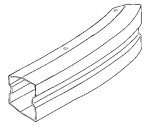
1992 - 2002 Viper Front Bumper Fascia Reinforcement - 04763098 Dodge
$895.00
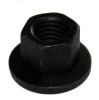
1992 - 2010 Dodge Viper Fascia Hex Nut / Coned Washer M10 x 1.5 - 06101448
$5.00
 Out of stock
Out of stock1992 - 2010 Dodge Viper M6.25x28 Retainer - 06500911
Part # 6500911
$7.00
1992 - 2013 Dodge SRT Viper U-Nut M6 x 1.00 Six Pack - 06504118
$50.00
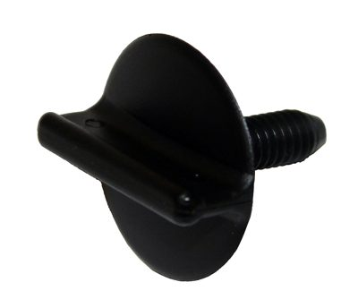
1992 - 2013 Dodge Viper Splash Shield Retainer Screw - 04708180
Part # 4708180
$9.95
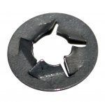
1992 - 2014 Dodge SRT Viper Fascia Spring Nut - 06100840
$3.00
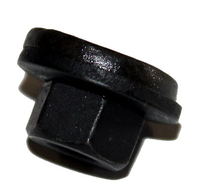
1992 - 2014 Dodge SRT Viper Hex Nut w/Sealing Washer M6 x 1.00 - 34201358
Part # 34201358
$6.00
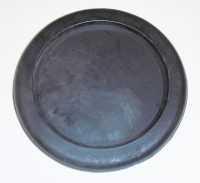
1992 - 2017 Dodge Viper Fog Service Plug Trunk Seal Shock - 04708057
Part # 04708057
$35.00

1993 - 1995 Dodge Viper Center Left Rocker Sill Protector Film - 04708431
Part # 4708431
$55.00
 Out of stock
Out of stock1994 - 2002 Dodge Viper Fan Shroud and Radiator Closure Support - 04709352AC
Part # 4709352AC
$1,699.00
 Out of stock
Out of stock1996 - 2002 Dodge Viper GTS / ACR Liftgate Sneaky Pete Brake Lamp - 04763042
Part # 4763042
$300.00
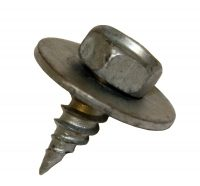
Out of stock1996 - 2002 Dodge Viper M4.8x1.59x13 Hex Head Tapping Screw - 06504580
Part # 6504580
$5.25
 Out of stock
Out of stock1996 - 2002 Dodge Viper Right Tail Lamp -
Part # 4848420
$275.99

1996 - 2002 Viper GTS, RT10, or ACR Front Cover Bra - 82202819
Part # 82202819
$179.00

1997 - 2002 Dodge Viper Front Fascia Support Brace LEFT 4708053
Part # 04708053
$999.99

1997 - 2002 Dodge Viper U-Nut .25-20 - 06029074
Part # 06029074
$3.50

1998 - 2002 Dodge Viper Front Fascia Bumper Cover - 05014539ZZ
Part # 05014539AB
$1,900.00
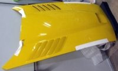
Out of stock2003 - 2006 Viper SRT Hood -- Yellow -- Gen III - 05029272AD (minor scuffs)
Part # 5029272AD
$595.00
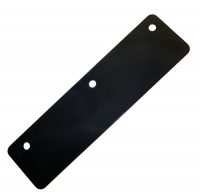
2003 - 2008 Dodge Viper SRT10 Front Splash Shield Air Dam - 05029614AA
Part # 5029614AA
$40.00

2003 - 2010 Dodge Viper Roadster Left Rear Bumper Fascia Foam 05029165AA
Part # 05029165AA
$45.00

2003 - 2010 Dodge Viper SRT10 Belly Pan Head Screw - 06505070AA
Part # 6505070AA 53138114
$11.75
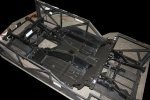
2003 - 2010 Dodge Viper SRT10 Complete Frame Including Floor Pans - 68053464AB
$16,500.00

2003 - 2010 Dodge Viper SRT10 Dash Panel Right Heat Shield - 05029318AA
Part # 5029318AA
$38.00

2003 - 2010 Dodge Viper SRT10 Fog Light Access Panel - 04865822AB
Part # 4865822AB
$29.95
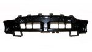
Out of stock2003 - 2010 Dodge Viper SRT10 Front Bumper Fascia Reinforcement - 04865643AC
Part # 4865643AC
$695.00
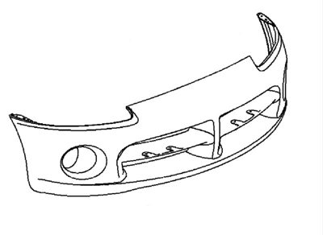
2003 - 2010 Dodge Viper SRT10 Front Fascia Bumper Cover - 05029154AB
Part # 05029154AB
$3,999.00
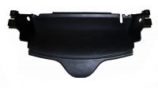
2003 - 2010 Dodge Viper SRT10 Radiator Air Baffle - 5290668AC
Part # 5290668AC
$185.00

2003 - 2010 Dodge Viper SRT10 Rear Bumper Fascia Reinforcement - 04865654AC
Part # 04865654AC
$250.00

2003 - 2010 Dodge Viper SRT10 Rear DODGE Decal in RED - 0WN80WRRAC
Part # 0WN80WRRAC
$39.35
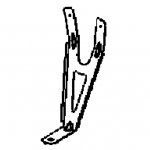
2003 - 2010 Dodge Viper SRT10 Rear Fascia Center Bracket - 05029568AA
$61.00
2003 - 2010 Dodge Viper SRT10 Rear VIPER Decal in RED - 0WN73WRRAC
$61.00

2003 - 2010 Dodge Viper SRT10 Right Fender Grill - 05029276AC
Part # 05029276AC
$94.00
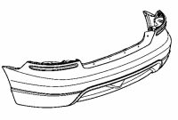
2003 - 2010 Dodge Viper SRT10 Roadster Rear Fascia - 05029155AD
Part # 5029155AD
$1,150.00
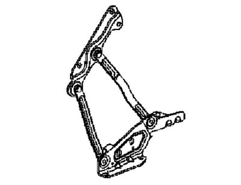
Out of stock2003 - 2010 Dodge Viper SRT10 Roadster Right Decklid Hinge - 04865618AB
Part # 4865618AB
$127.00

2003 - 2010 Dodge Viper SRT10 Roadster Right Rear Bumper Fascia Foam - 05029164AA
Part # 05029164AA
$85.00

2003 - 2010 Dodge Viper SRT10 Side Sill Belly Pan Phillips Screw & Washer - 06035625
Part # 6035625
$16.95

2003 - 2010 Viper SRT10 Rear Belly Pan Diffuser Extension - 5290137AE
Part # 5290137AE
$499.99

2003 - 2010 Viper SRT10 Right Fender Support - 04865636AI
Part # 04865636AI
$1,800.00

2003 - 2013 Dodge SRT Viper Main Belly Pan - 05290078AI
Part # 05290078AI
$660.00

2003 - 2014 Dodge SRT Viper Bumper Reinforcement - 05029208AA
Part # 05029208AA
$11.00

2003 - 2016 Dodge SRT Viper Stainless Sill Protectors - 82208805AB
Part # 82208805AB
$214.00

2003 - 2016 Dodge Viper SRT10 Push Pin - 06504521
Part # 6504521
$9.30
 Out of stock
Out of stock2003-2006 Heat Shield Rear 05290247AA
Part # 05290247AA
$96.00
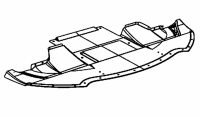
2006 - 2010 Dodge Viper SRT10 ACR Front Splitter Kit - 68050001AB
Part # 68050001AB
$7,025.00

2006 - 2010 Dodge Viper SRT10 Coupe Left Rear Bumper Foam - 05030319AB
Part # 05030319AB
$75.00
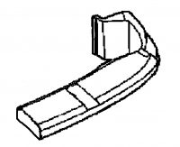
2006 - 2010 Dodge Viper SRT10 Coupe Right Rear Bumper Foam - 5030318AB
Part # 5030318AB
$75.00

2006 - 2010 Dodge Viper SRT10 Coupe Right Tail Light Lamp Housing- 05030320AB
Part # 5030320AB
$324.00

2006 - 2010 SRT Viper Roof, Coupe Venom Red - 5030030AD
Part # 5030030AD
$1,197.00

2006 - 2010 Viper COUPE Rear Bumper Fascia 1CR60TZZAE
Part # 1CR60TZZAE
$712.00
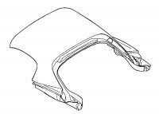
2006-2010 Viper SRT Coupe Roof Panel Violet 5030030AD
Part # 5030030AD
$1,197.00

2008 - 2010 Dodge Viper SRT10 ACR Track Extension Kit - 68050015AB
Part # 68050015AB
$850.00
 Out of stock
Out of stock2008 - 2010 Dodge Viper SRT10 Front Air Dam Set - 68047956AB
Part # 68047956AB
$49.99
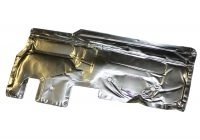
2010 Dodge Viper SRT10 Left Side Quarter Panel to Frame Isolator - 05029431AC
$90.00
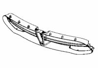
Out of stock2013 - 2014 SRT Viper Front Grill 68141085AB
Part # 68141085AB
$140.00

Our FAMOUS 'rubber-clothespin' snap-on front plate bracket. Thousands Sold. The faster you drive, the harder it grips. On or Off in 10 seconds! Available for Gen 1, 2, 3, 4 Must specify Year or Gen .
$95.00
 Out of stock
Out of stockUsed Taillight
Part # 4642103
$399.99

1992 - 2002 Dodge Viper Rivet .25 grip 06-25 Fender or Fuel Access Panel 06034578
$6.75
Out of stock1992 -1996 Dodge Viper RT/10 Right Tail Lamp - 04642102
Part # 4642102
$329.00
1992-2002 Viper GTS RT10 Fuel Access Close Out Panel Mopar Part 4848582AB
Part # 4848582AB
$600.00
1996 - 2002 Dodge Viper Left Rear Lower Splash Shield / Battery Cover - 04709037
Part # 04709037
$99.00
1996 - 2002 Dodge Viper Left Tail Lamp - 04848421
Part # 4848421
$375.00
1996-2002 Dodge Viper Fascia Bumper to Hood Seal - 4848448
$48.00
1996-2002 Dodge Viper Gen 2 New OEM Front frame Section, Factory pn#4855232ac *FRONT HALF ONLY*
$11,250.00
1997 - 2002 Dodge Viper Door Opening Surround Panel RIGHT 4848838AA
Part # 4848838AA
$1,400.00
1997 - 2002 Viper Door Opening Surround Panel LEFT 4848839AA Dodge
Part # 4848839AA
$600.00
2003 - 2010 Dodge Viper SRT10 Aluminum Tow Hook Front
$275.00
Out of stock2003 - 2010 Dodge Viper SRT10 Fog Light Assembly - 05029226AB
Part # 5029226AB 5029228AA
$135.00
Out of stock2003 - 2010 Dodge Viper SRT10 Front Belly Pan Extension - 05290136AE
Part # 05290136AE
$300.00
2003 - 2010 Viper SRT10 Left Fender Support - 04865637AJ
Part # 04865637AJ
$2,365.00
Out of stock2003 - 2014 Dodge SRT Viper Bumper Reinforcement - 05029208AA
Part # 05029208AA
$11.00
Out of stock2003-2010 Dodge Viper SRT10 Right Headlight Assembly - 04865484AI
Part # 4865484AI
$1,195.00
Out of stock2003-2010 Viper SRT10 Left Headlight Assembly - 04865485AI Dodge
Part # 4865485AI
$1,195.00
2006 - 2010 Dodge Viper SRT10 Coupe Left Tail Light Lamp Housing - 05030321AB
Part # 5030321AB
$375.00
Out of stock2006-2010 Dodge Viper Coupe Brake Light High Mounted Lamp - 05030107AB
Part # 5030107AB
$299.00
2008 - 2010 Dodge Viper SRT10 Front Air bag Sensor - 4896061AB
Part # 4896061AB
$175.00
2008 - 2010 Dodge Viper SRT10 Front Air bag Sensor - 4896061AB
Part # 4896061AB
$44.00
92-96 VIPER FRONT ENGINE CROSSMEMBER 04642289
$275.00